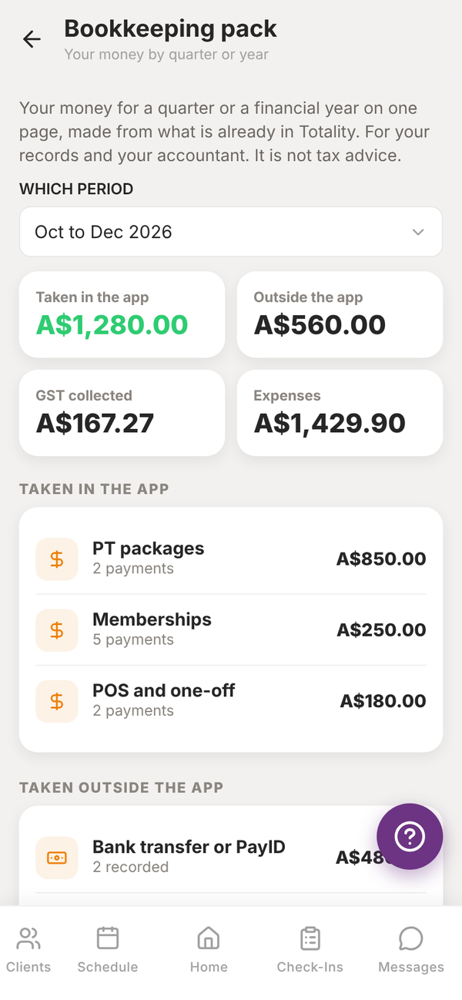
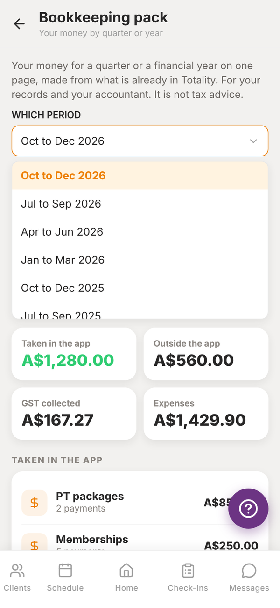
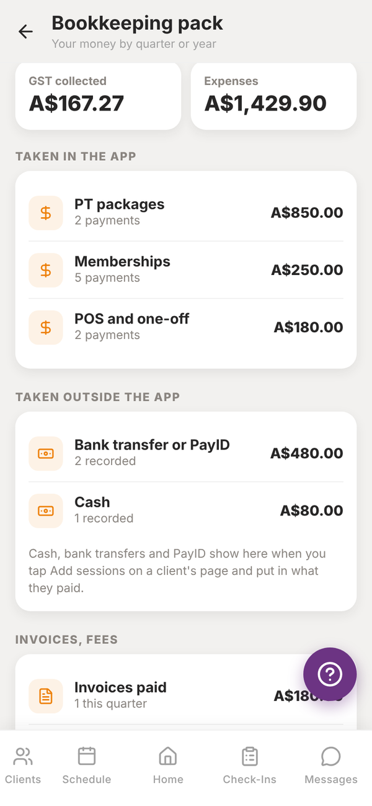
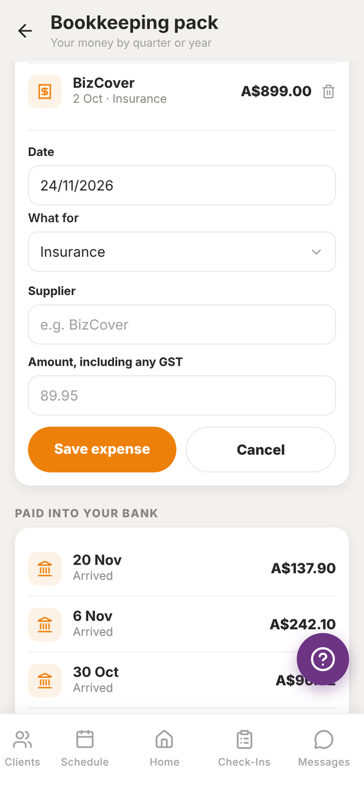
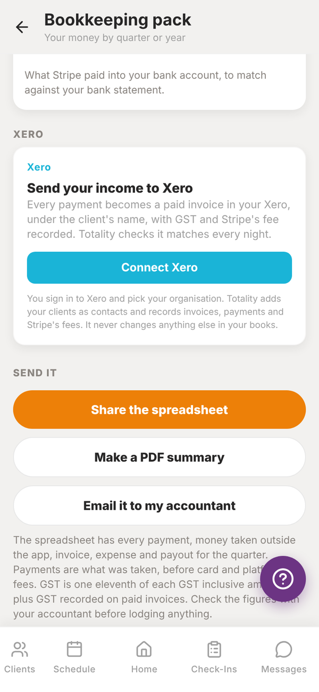
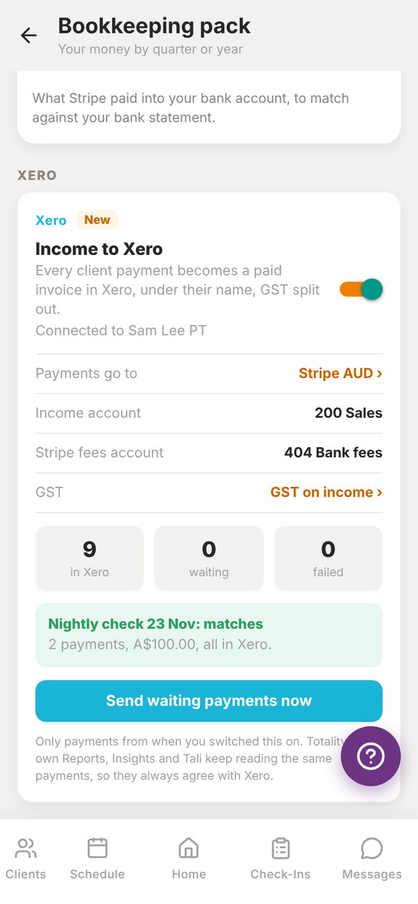

Totality for trainers
Bookkeeping pack
Your coaching income for a quarter or a financial year on one page, with expenses, GST and payouts, ready for your accountant or sent to Xero. Comes with the POS add-on.
POS add-on
The Bookkeeping pack puts your money for a quarter or a financial year on one page, made from what is already in Totality. It is for your records and your accountant, and it is not tax advice.
It comes with the POS add-on. On Home, open Bookkeeping pack under My business.

Pick a period#
Under Which period, pick a quarter (for example Oct to Dec 2026) or a whole financial year (July to June). The page fills in for that period.

What is in it#
Four figures sit at the top: Taken in the app, Outside the app, GST collected and Expenses. Underneath:
- Taken in the app: every payment through Totality, grouped by type, such as PT packages, memberships, shop sales, and POS and one-off payments. Plans that repeat count every payment.
- Taken outside the app: cash, bank transfers or PayID, and other apps, from the amounts you put in when you tap Add sessions on a client's page. See Sessions left.
- Invoices paid in the period and what is still owed to you, from your invoices.
- Refunds, when there were any.
- Fees taken by Stripe and Totality, read from Stripe for the period.
- Expenses you recorded.
- Paid into your bank: what Stripe paid out to you in the period, so your accountant can match it to your bank statement.

Payments are what was taken, before card and platform fees.
GST#
If you are registered for GST, switch on Registered for GST in your business details (open any client's page, Invoices, the settings button). The pack then shows GST collected: one eleventh of everything you took that includes GST, after refunds, plus the GST recorded on your paid invoices.
If you aren't registered, the GST figure says Not registered.
Add an expense#
- Under Expenses, tap Add an expense.
- Pick the date, what it was for (Insurance, Equipment, Rent or venue hire, Courses and education, Marketing and more), the supplier, and the amount including any GST.
- Tap Save expense.

Tap the bin next to an expense to remove it.
Send it#

- Share the spreadsheet saves one file with every payment, money taken outside the app, invoice, expense and payout for the period.
- Make a PDF summary makes a short PDF of the figures. Tap Open the PDF summary to view or save it.
- Email it to my accountant sends the spreadsheet and the PDF summary as attachments. Replies come back to your own email. You can send up to 5 a day.
Xero#
If you use Xero, every client payment can go straight into it.
- In the pack, under Xero, tap Connect Xero.
- Sign in to Xero and pick your organisation.
- Back in Totality, switch on Income to Xero and check where payments go, the income account, the Stripe fees account and GST.

Every client payment becomes a paid invoice in Xero, under the client's name, with GST and Stripe's fee recorded. Totality sends new payments every 15 minutes, or tap Send waiting payments now. Every night it checks Totality against Xero and tells you if they don't match. Only payments from when you switched it on are sent. Totality adds your clients as contacts and records invoices, payments and Stripe's fees, and never changes anything else in your books.
Questions#
Where does cash I take show?
Only if you record it. Tap Add sessions on the client's page, pick Cash and put in the amount. It then shows under Taken outside the app.
Why doesn't Taken in the app match what landed in my bank?
Taken in the app is before fees. Fees taken shows what Stripe and Totality took, and Paid into your bank shows what Stripe actually paid you.
Can I see last financial year?
Yes. Pick it from Which period. The drop down has this financial year and the two before it.
Does Xero cost extra?
No. Connecting Xero is part of the bookkeeping pack. You need your own Xero subscription.